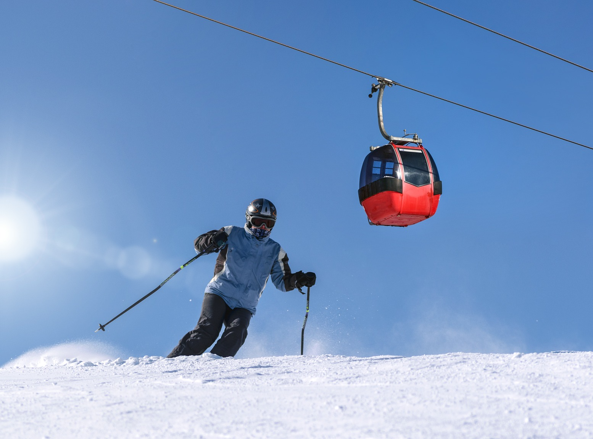

Redtail Ski & Snowboard Club
Welcome to Redtail Ski and Snowboard Club! Whether you’re interested in learning how to snowboard for the first time or you’re a long-time skiing expert, Redtail Ski and Snowboard Club has something for you. In 1992, Abdel Melnyk and Steven “Spike” Becker started the RSSC to make new friends and celebrate the wonderful world of skiing and snowboarding with everyone. Since then, RSSC has maintained around 40 lifetime members with countless new friends along the way, leading to continuous friendships and special moments. We love to have holiday gatherings and potlucks, and cherish the fun and friendship we cultivate for ourselves!
RSSC meets at the Retail Mountain Ski Lodge nestled on the west side of Redtail Mountain near Galloping Goose Lake. During the winter season, we’ll send out emails with an itinerary for our meeting schedule. Membership is limited, so it’s a good idea to sign up as soon as you can by shooting us an email at membership@redtailssbc.org and telling us a little bit about yourself! We ask that you provide us with your full name, age, skill level, and what you’re looking to get out of joining RSSC. Children are allowed and don’t require a monthly contribution as long as they’re 12 or older and accompanied by an adult 18 or older. There’s a $10 monthly contribution for all adults that goes towards refreshments, parties, and occasional transportation for day trips to other mountains. You can also get discounts through the Redtail Mountain Ski Lodge cafe and several other shops at Retail Mountain with a membership.
RSSC does not tolerate any disruptive or disrespectful behavior towards other members, staff at Redtail Mountain Ski Lodge, or the mountain and its wildlife. We do not condone violent or hateful behavior, littering, harassment, or anything that breaks Redtail Mountain Ski Lodge or Retail Mountain rules. There is a strict no-drinking policy! We want everyone to feel comfortable while skiing and children will be present, please be considerate towards others.
If you think you’re ready to join RSSC, take the plunge and join us today! We offer student and senior discounts for qualifying applicants. For 30 years RSSC has been a Retail Mountain community staple, bringing comradery and friendship to the slopes. We can’t wait to meet you!